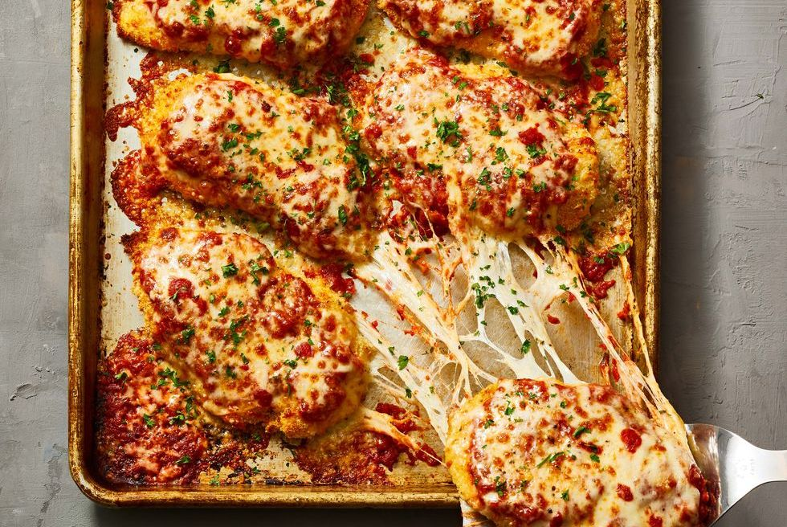
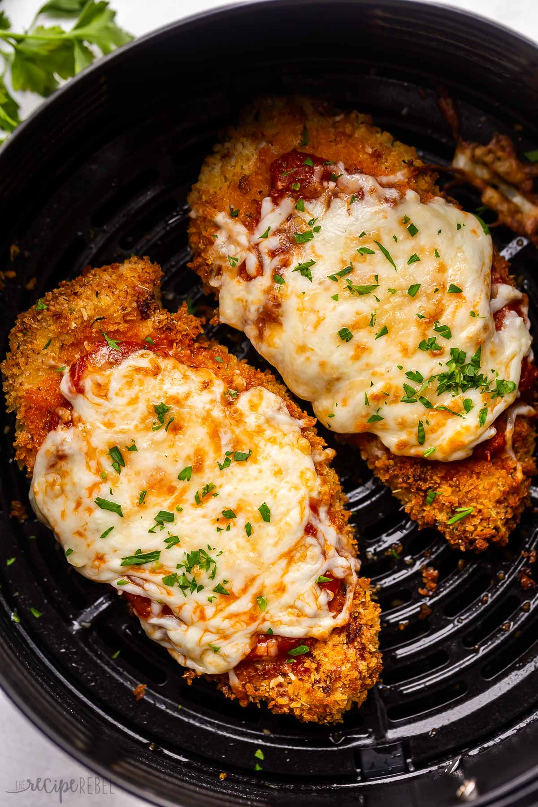

1

Chicken Parm is my ultimate comfort food. The combination of crispy breaded chicken, tangy tomato sauce,
and gooey melted cheese always hits the spot. I love to make it at home and experiment with different
variations like using panko breadcrumbs for extra crunch or adding fresh herbs to the sauce. Every time I
make it, it feels like a warm hug in a dish..
Chicken Parmesan
2

One of my favorite chicken parm recipes is a classic version that I found on Food Network. To make it,
you start by breading thin chicken cutlets with a mixture of seasoned breadcrumbs and Parmesan cheese. Then
you pan-fry the chicken until it's golden and crispy. Next, you top the chicken with tomato sauce and
mozzarella cheese and bake it in the oven until the cheese is melted and bubbly. The result is a deliciously
satisfying meal that's perfect for a cozy night in.
.
How its made
3